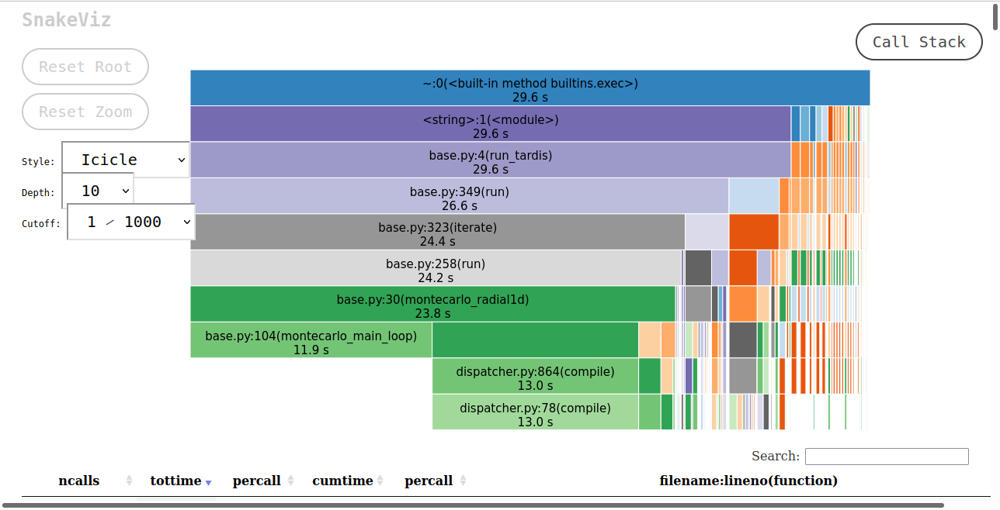

You can interact with this notebook online: Launch interactive version
Basic Profile of TARDIS¶
A profile is a set of statistics that describes how often and for how long various parts of the program execute (cProfile). A majority of TARDIS can be profiled, however, some code is Numba code, which cannot be profiled. This is because Numba compiles these functions directly to machine code; the python interpreter doesn’t see these functions and therefore it doesn’t read them.
This notebook uses snakeviz, which is a graphical viewer for the output of cProfile, to visualize the results and make them interactive. In order to use SnakeViz, you must first download it via pip. The first cell loads SnakeViz and gets the notebook ready to run TARDIS.
[1]:
%load_ext snakeviz
from tardis import run_tardis
from tardis.io.atom_data.util import download_atom_data
download_atom_data('kurucz_cd23_chianti_H_He')
/usr/share/miniconda3/envs/tardis/lib/python3.7/importlib/_bootstrap.py:219: QAWarning: pyne.data is not yet QA compliant.
return f(*args, **kwds)
I am telling the cell below to use snakeviz on the function below, which is a run of TARDIS in its enteriety. An option is to add the -t flag, which will tell it to display the HTML in a new tab, instead of embedding it.
[2]:
%%snakeviz
run_tardis('tardis_example.yml')
[py.warnings ][WARNING] /usr/share/miniconda3/envs/tardis/lib/python3.7/site-packages/traitlets/traitlets.py:3050: FutureWarning: --rc={'figure.dpi': 96} for dict-traits is deprecated in traitlets 5.0. You can pass --rc <key=value> ... multiple times to add items to a dict.
FutureWarning,
(warnings.py:110)
[py.warnings ][WARNING] /usr/share/miniconda3/envs/tardis/lib/python3.7/site-packages/tardis-2021.11.26.0.dev103+g4d8eb7f4-py3.7.egg/tardis/plasma/properties/radiative_properties.py:92: RuntimeWarning: invalid value encountered in true_divide
(g_lower * n_upper) / (g_upper * n_lower)
(warnings.py:110)
[py.warnings ][WARNING] /usr/share/miniconda3/envs/tardis/lib/python3.7/site-packages/tardis-2021.11.26.0.dev103+g4d8eb7f4-py3.7.egg/tardis/plasma/properties/radiative_properties.py:92: RuntimeWarning: invalid value encountered in true_divide
(g_lower * n_upper) / (g_upper * n_lower)
(warnings.py:110)
[py.warnings ][WARNING] /usr/share/miniconda3/envs/tardis/lib/python3.7/site-packages/tardis-2021.11.26.0.dev103+g4d8eb7f4-py3.7.egg/tardis/plasma/properties/radiative_properties.py:92: RuntimeWarning: invalid value encountered in true_divide
(g_lower * n_upper) / (g_upper * n_lower)
(warnings.py:110)
[py.warnings ][WARNING] /usr/share/miniconda3/envs/tardis/lib/python3.7/site-packages/tardis-2021.11.26.0.dev103+g4d8eb7f4-py3.7.egg/tardis/plasma/properties/radiative_properties.py:92: RuntimeWarning:
invalid value encountered in true_divide
(warnings.py:110)
*** Profile stats marshalled to file '/tmp/tmpun29ry6t'.
Embedding SnakeViz in this document...
As SnakeViz uses a web browser to create the HTML to display, when this notebook is run the HTML isn’t viewable. In order to view this a picture of the HTML output is saved and displayed below.
The SnakeViz visualization gives two things. At the top is a stack trace, where you can see which functions call others, and how long those functions take in respect to the caller function. At the bottom is all of the information that cProfile provides.
The bottom left montecarlo_radial1d is montecarlo_main_loop. This function does a majority of the computation, yet there is nothing below it. This is because it, and all the functions that it calls, are Numba functions. montecarlo_main_loop is visible as montecarlo_radial1d calls it, but the functions that it calls are not visible as it is a Numba function.
If the SnakeViz is run again without restarting the kernel, then the times will decrease and more time will be spent in montecarlo_main_loop relative to montecarlo_radial1d, as the Numba functions will have all compiled.
If you run this notebook the HTML from cell 2 will be displayed at the bottom without issue; the lower cell is just a solution to display the SnakeViz output without having access to the HTML.
